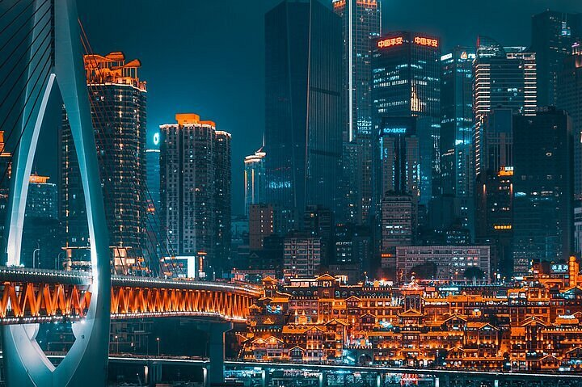

ฉงชิ่ง (Chongqing)

เมืองภูเขาทางตะวันตกเฉียงใต้ อาคารสร้างลดหลั่นตามความชัน ทางเดินและถนนซ้อนทับกันหลายชั้นจนดูเหมือนเมืองอนาคต มี สถานีรถไฟลี่จื่อป้า ที่วิ่งทะลุตึกที่อยู่อาศัย และ หงหยาต้ง อาคารโบราณริมหน้าผาที่จะเปิดไฟสว่างไสวในตอนกลางคืนคล้ายฉากในแอนิเมชันเรื่อง Spirited Away เป็นต้นกำเนิดของ หม้อไฟฉงชิ่ง ที่ขึ้นชื่อเรื่องความเผ็ดชาจากหมาล่าและน้ำมันวัวเข้มข้น